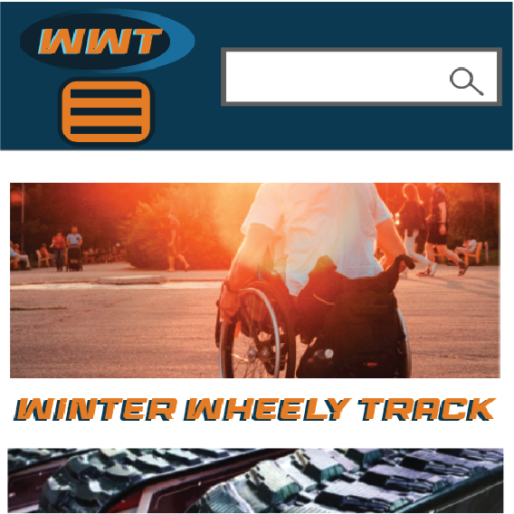
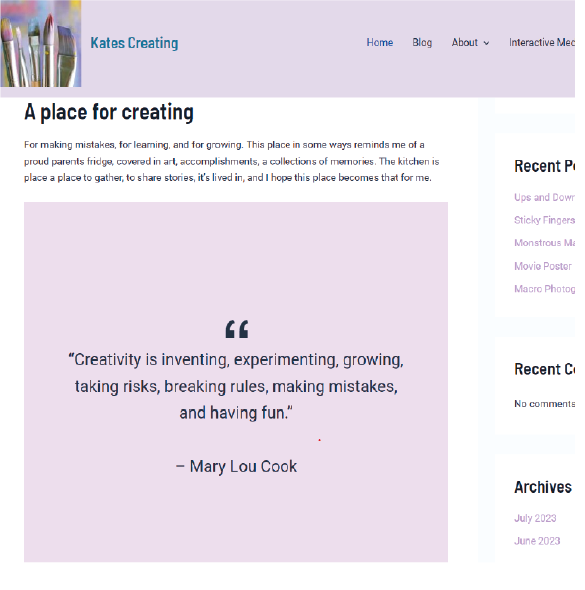
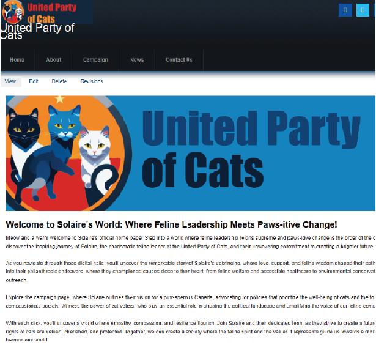

Our Past Projects



Testemonials

"I've loved being able to have a one stop-shop for everything I need. I always have so many things on my mind. The KateCreates team has been there for me every step of the way!"
"I can't believe the amount of time I've saved trying to find people that could do the job I needed. Sifting through piles of resumes, I'm so glad that's one less thing I need to do now with this team."
"How did they know what I wanted more than I did? That's amazing! I love the work they've done!"